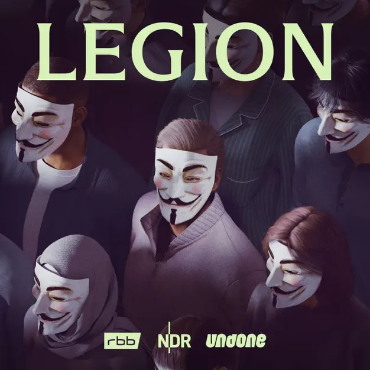

Legion: Hacking Anonymous
Informationen zur Episode
Informationen zur Episode
Der Geschäftsmann
Anonymous ist wieder da. Das Hacker-Kollektiv wird von vielen Menschen weltweit gefeiert: Es verbreitet Hoffnung. Anonymous wendet sich Anfang 2022 mit einer Kriegserklärung direkt an Wladimir Putin und unterstützt seit Beginn des russischen Angriffskrieges die Menschen in der Ukraine. Aber: Wer ist Anonymous überhaupt? Wir reisen quer durch Europa – von Deutschland in die Schweiz und Großbritannien, nach Polen und in die Ukraine. Und mit jeder Station wird deutlicher: Anonymous ist nicht ganz das, was wir immer geglaubt haben. » Legion: Hacking Anonymous« handelt von Held*innen, die vielleicht gar keine sind. Von Menschen, die das Internet verändert haben – und auch ein bisschen die Welt. Und von denen wir trotzdem nicht genau wissen: Auf welcher Seite stehen sie eigentlich? Wer steckt hinter der Maske? Wer ist Anonymous heute? Ein Zufallsprodukt des Internets? Eine Nerdgruppe? Nur ein Name – oder gar die Erfindung eines Geheimdienstes? Khesrau Behroz (»Cui Bono: WTF happened to Ken Jebsen?«) und sein Team (Autor: Patrick Stegemann) haben monatelang recherchiert, auf der Suche nach Antworten. » Legion: Hacking Anonymous« ist eine Produktion von rbb, NDR und Undone. 2022. Neue Folgen jeden Sonntag in der ARD Audiothek und überall wo es Podcasts gibt.
Erscheinungsdatum:12.02.2022